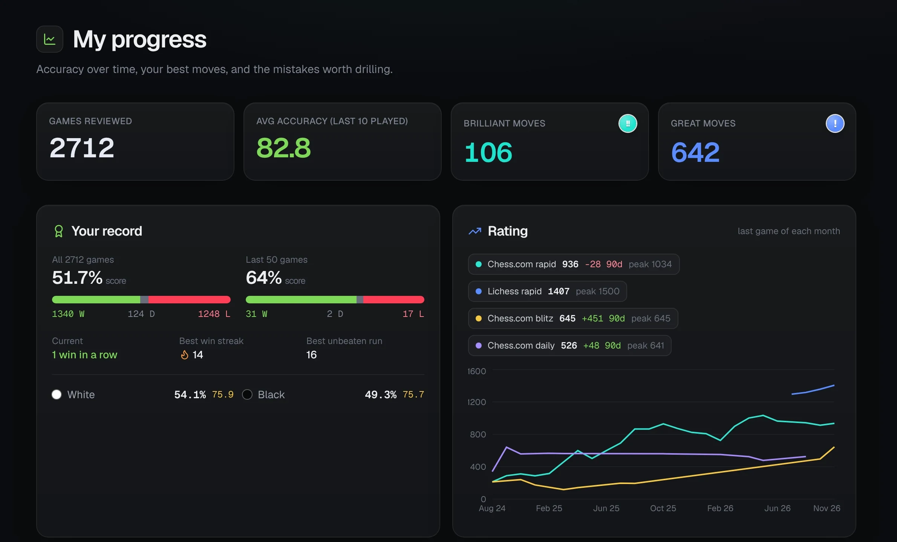
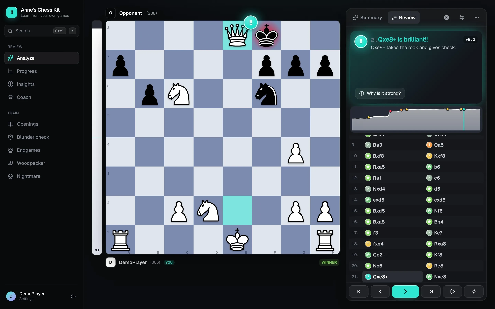
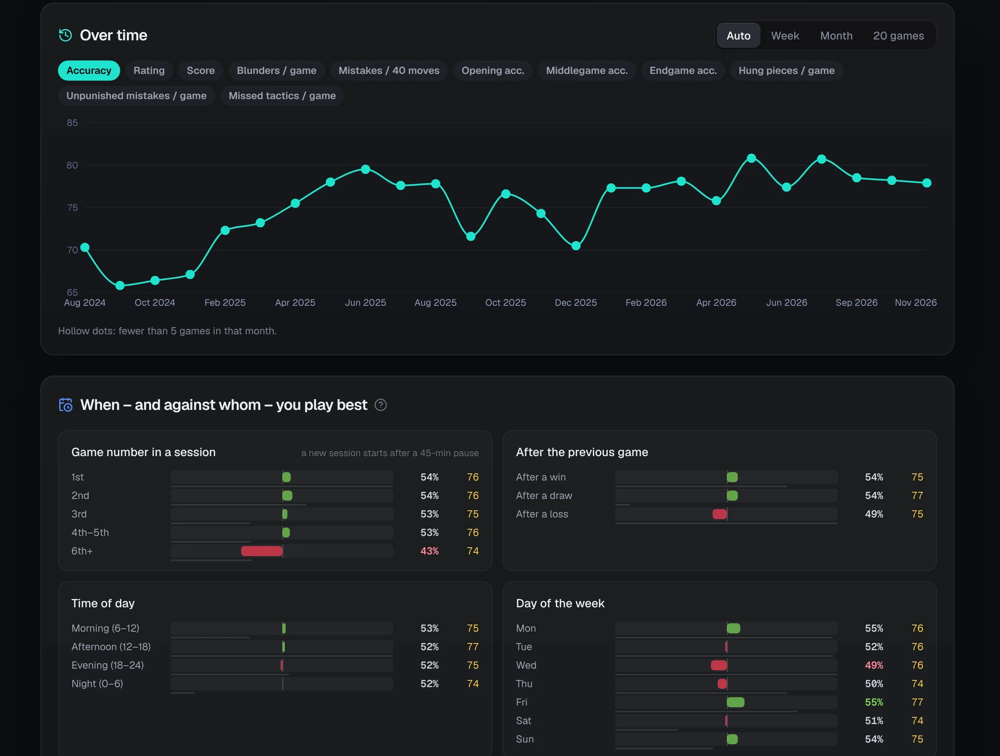
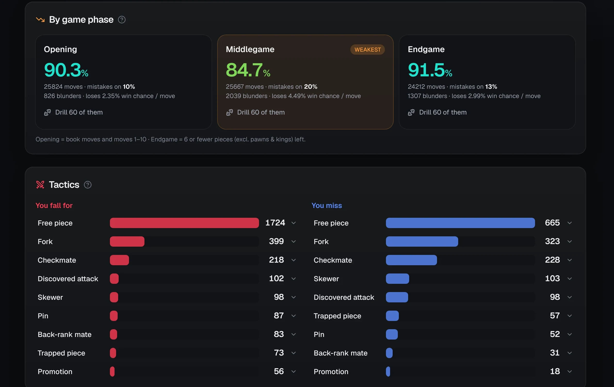
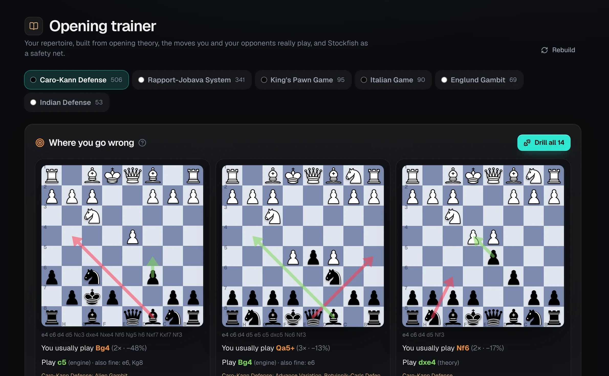

See where you stand
Your record by colour, rating history per platform and time control, accuracy over time and your personal records, from every game you have played.
Version 1.0.2 for Windows, macOS and Linux. Free software (GPL-3.0).
Move ratings from Brilliant to Blunder, an explanation for every move, insights across your whole history and puzzles made from your own errors. What chess sites sell as premium, without limits, on your own computer.
Installer or portable zip. Stockfish, Lc0 and the Maia networks included; no account needed.

Most of what helps you improve is behind a subscription on the big sites, or capped per day. Here it all runs on your own machine, so there is nothing to meter.
Free-tier limits of popular chess sites and training services, as they published them in November 2026. Those services are good at what they do; the kit reads your games from the chess sites and adds what happens after the game.

Your record by colour, rating history per platform and time control, accuracy over time and your personal records, from every game you have played.

Results by game number in a session, time of day, day of the week, after a win or a loss. Stop before the game that usually goes wrong.

Every mistake is sorted by what happened: a hanging piece, a fork, a pin, a back-rank mate. Both the tactics you fall for and the ones you miss, each with a drill of those exact positions.

The opening trainer finds the positions where your usual move goes wrong, from your own games, the Lichess opening book and Stockfish, and makes you play the better move until it sticks.
Each trainer works on positions from your own games, so you practise the mistakes you actually make.
There is no account and no server. The program goes online only to fetch your games from the public
Chess.com and Lichess APIs, and to download extra piece sets if you ask for them. Reviews, games and training
records live in the userdata folder next to the program.
Analysis runs on your own processor: one engine per CPU thread, about 40 positions a second at depth 16 on an 8-core desktop. A history of a few thousand games is reviewed in the background in hours, not weeks of daily limits.
AnnesChessKit-X.Y.Z-setup.exe (no administrator rights needed) or
AnnesChessKit-X.Y.Z-windows.zip (portable: unpack anywhere).AnnesChessKit.exe in the unpacked folder.# Node.js 20.19+ or 22+ to build the UI once
git clone https://github.com/peptopekto/annes-chess-kit.git
cd annes-chess-kit/frontend
npm ci && npm run build
cd ..
# put Stockfish into engine/
./annes-chess-kit.sh # Windows: AnnesChessKit.batNeeds Python 3.11+ and Stockfish 16 or newer. Optional: Lc0 with the Maia networks for the bot, Syzygy tablebases for exact endgames, the Lichess puzzle database for more puzzles.
Every move is measured in expected points (win probability) lost against Stockfish’s best move. The win-probability curve depends on rating: at 1000 a +2 position is far from won, so the curve is flatter for lower ratings. A game gets the same ratings every time it is analysed. Accuracy uses the Lichess formula.
There is none. It is free software under the GPL v3: no ads, no account, no tracking and no paid tier. It costs nothing to run because the analysis happens on your own computer instead of on a server someone has to pay for.
Only to import new games from Chess.com or Lichess. Reviewing, training and playing the bot work offline. You can also load games from a PGN file.
It depends on your processor and the depth you choose. At the default depth an 8-core desktop reviews about one game every few seconds, in the background; you can use the app meanwhile and set how many CPU threads it may use.
No. Explanations come from rules applied to the engine’s analysis, written for the position at hand. The bot uses the open Maia networks, which run locally like Stockfish.
No. Enter the new name in Settings. The old one is kept under “Other names you play as”, so your earlier games still count as yours and games you already reviewed stay marked as reviewed. If you changed the name with version 1.0.2 or older, add the old name there yourself.
No. It is an independent open-source project that reads your public games through their APIs.
Your next game deserves a review. So do the last thousand.